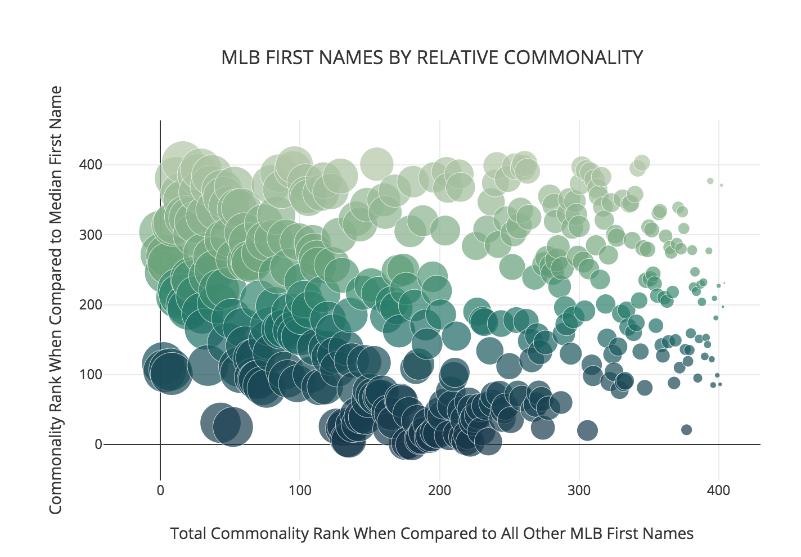
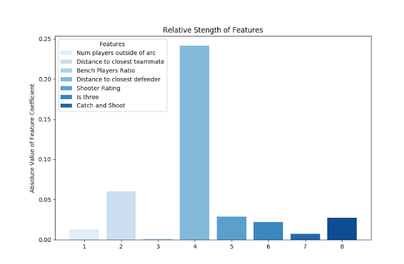

What We Do
Sports Analytics Group at Berkeley is a student-run sports analytics research group at UC Berkeley. We aim to give members a full experience with sports analytics via consulting and research with real-world sports clients.
Our organization consists of current and former sports analytics employees for the Golden State Warriors, Bleacher Report, New York Mets, CAA, and Adidas. Our members are undergraduate and graduate students at UC Berkeley with various backgrounds, including Data Science, Computer Science, Physics, Economics, Biology, and Literature. Learn more here
The Divisions

Data Journalism

Projects
Each team focuses on different aspects of sports analytics. The Data Journalism team creates short-form articles that are grounded in data and data visualization. The Projects Team focuses on consulting for sports teams, and long term research projects. The Business Team gives members experience with hosting speaker events, industry panels, and more!
Data Journalism Site
Each semester, the members of the Data Journalism branch work hard on data-driven articles and podcasts. Head over to the Data Journalism page to check out their work!
DJ Archive
Every data journalism article and blog post our members have written, all in one place. Filter by sport or semester to find what you're interested in!